Broschüre online lesen
Kleine Schritte. Große Wirkung.
Für Fettleber, Vorstufe Diabetes und Typ-2-Diabetes: Teller-Regel, Tauschideen, Bauch-Index, Bewegung, 4-Wochen-Plan, Rezepte und die Gesundheitskette.
Die Seiten sehen aus wie im gedruckten Heft. Am Handy kannst du sie mit zwei Fingern größer ziehen. Über „Inhalt“ springst du zu jedem Kapitel.
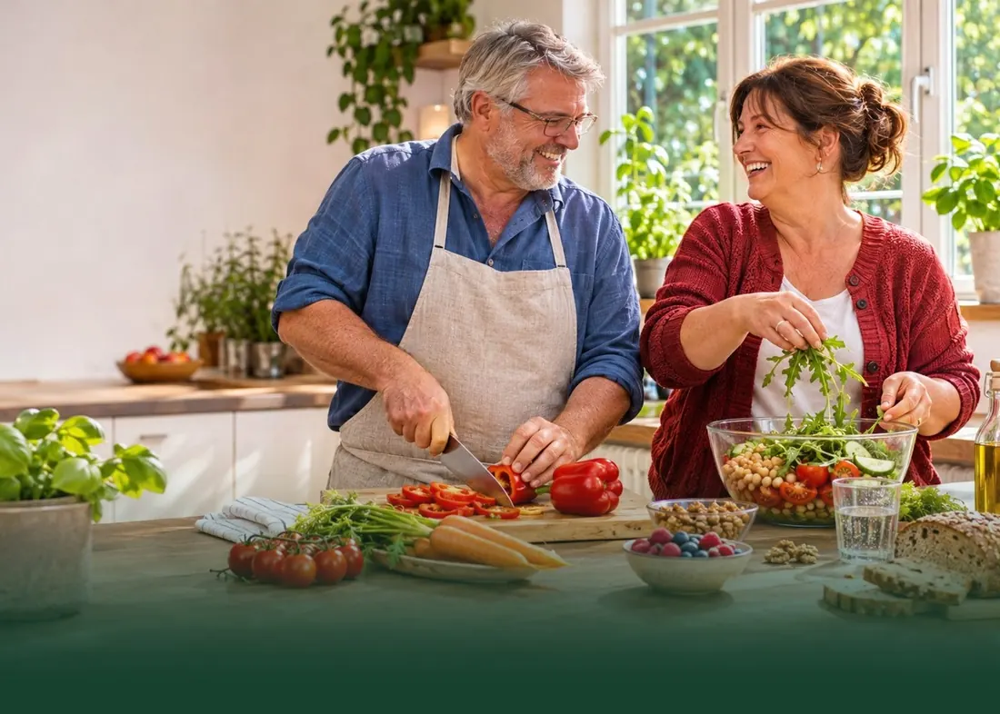
Kleine Schritte.
Große Wirkung.
Was Sie glücklich macht,
tut auch Leber und Blutzucker gut.
Hier erfahren Sie, warum das so ist,
und wie Sie Schritt für Schritt dorthin kommen.
Was wünschen Sie sich
für die nächsten Jahre?
Bevor es um Leber und Blutzucker geht,
eine einfache Frage.
Was möchten Sie in zehn Jahren noch erleben?
Kreuzen Sie an, was Ihnen wichtig ist.
Mein Warum
Schreiben Sie Ihren wichtigsten Wunsch auf.
Hängen Sie ihn an den Kühlschrank.
Genau darum geht es in dieser Broschüre.
Alles, was Sie angekreuzt haben, braucht vor allem eines: einen Körper, der mitmacht.
Leber, Bauch und Blutzucker sind dabei Ihre wichtigsten Helfer.
Kleine Schritte reichen, um sie zu stärken.
Wussten Sie schon?
Vier Fragen, vier Überraschungen.
Raten Sie ruhig. Die Antworten stehen unten auf der Seite.
Mehr dazu finden Sie auf den angegebenen Seiten.
Wie viel Gewicht muss man verlieren, damit sich eine Fettleber bessert?
Kann man Typ-2-Diabetes wieder loswerden?
Was macht nach zwei Jahren ähnlich viel zufriedener wie ein neuer Job nach Arbeitslosigkeit?
Wer hält sein neues Gewicht besser: allein oder mit Freunden?
Die Antworten
Und die schönste Überraschung: Gesundheit und Glück hängen zusammen.
Wie, zeigt die nächste Seite.
Gesund und glücklich.
Das eine stärkt das andere.
Sie müssen nicht erst gesund werden, um glücklich zu sein.
Beides wächst miteinander: Jeder kleine Schritt hebt die Stimmung, und gute Stimmung macht den nächsten Schritt leichter.
Ihre Glücksspirale
Wer zufrieden und zuversichtlich ist, hat ein um 18 % geringeres Sterberisiko. Das zeigen 35 Langzeitstudien mit anfangs gesunden Menschen.
[15]Zwischen 50 und 75 verbringen Normalgewichtige rund 7 Jahre mehr bei guter Gesundheit als Menschen mit starkem Übergewicht (BMI ab 35).
über 70.000 Menschen [16]Bewegung lindert Niedergeschlagenheit, Angst und Stress deutlich. Jede Form zählt, auch Spazierengehen.
97 Übersichtsarbeiten [17]Wer deutlich mehr davon isst, ist nach zwei Jahren so viel zufriedener wie nach dem Schritt von Arbeitslosigkeit in Arbeit.
[18]Heute Abend: drei gute Dinge
Schreiben Sie vor dem Schlafengehen drei Dinge auf, die heute gut waren, und warum.
Wer das eine Woche lang tat, war in einer Studie noch ein halbes Jahr später glücklicher[19].
Die Studien zeigen Zusammenhänge in großen Gruppen, keine Garantie für den Einzelnen. Alle Quellen finden Sie im Verzeichnis auf Seite 19.
Ihr Körper will gesund werden.
Helfen Sie ihm dabei.
Die Leber ist ein erstaunliches Organ:
Sie kann eingelagertes Fett wieder abbauen und sich erholen. Auch beim Typ-2-Diabetes gilt: Was Sie essen und wie viel Sie sich bewegen, wirkt oft stärker, als viele denken.
weniger Körpergewicht reichen oft schon, um das Leberfett deutlich zu senken.
Wer in einer Studie 10 % abnahm, bei dem bildete sich die Leberentzündung fast immer zurück.
waren in der DiRECT-Studie nach einem Jahr in Diabetes-Remission: normale Werte ohne Diabetes-Tabletten.
Jede Verbesserung zählt
Eine Remission ist nicht für jeden erreichbar. Das ist auch nicht nötig, um viel zu gewinnen: In der großen britischen UKPDS-Studie ging jeder Prozentpunkt weniger HbA1c mit rund einem Drittel weniger Schäden an kleinen Gefäßen einher, also an Augen, Nieren und Nerven.[4]
Bewegung wirkt auch ohne Waage
Regelmäßige Bewegung senkt das Leberfett und macht die Muskeln empfindlicher für Insulin, und zwar auch dann, wenn sich das Gewicht kaum verändert. Fortschritt zeigt sich oft zuerst am Gürtel, an der Treppe und an der Laune.
Das Prinzip dieser Broschüre
Keine Verbote, keine Diät-Strenge. Stattdessen kleine Veränderungen, die schmecken, in Ihren Alltag passen und sich Woche für Woche addieren. Ein schwieriger Tag setzt Ihren Fortschritt nicht auf null.
Die Spirale
dreht sich in beide Richtungen.
Kommt über längere Zeit mehr Energie an, als der Körper verbraucht, speichert die Leber Fett.
Eine verfettete Leber und volle Fettdepots am Bauch machen die Zellen weniger empfindlich für Insulin, und der Blutzucker steigt. Die gute Nachricht: Derselbe Kreislauf funktioniert auch rückwärts.
Zucker zum Trinken
Zucker in Limonade, Eistee oder Saft macht kaum satt und erreicht die Leber in kurzer Zeit. Haushaltszucker besteht zur Hälfte aus Fruchtzucker (Fruktose), den vor allem die Leber verarbeitet. In Studien förderten größere Mengen davon dort die Fettneubildung.
Ganzes Obst ist dagegen ausdrücklich willkommen: Ballaststoffe, Wasser und Kauen bremsen die Aufnahme und machen satt.
Weißmehl und Vollkorn
Weißbrot, Toast und helle Brötchen gehen schnell ins Blut und machen nur kurz satt. Vollkorn, Haferflocken und Hülsenfrüchte liefern Ballaststoffe, halten länger vor und lassen den Blutzucker sanfter ansteigen.
Die Menge und die ganze Mahlzeit zählen: Brot mit Gemüse, Ei oder Käse wirkt anders als Brot allein.
Was über Jahre
den Bauch bewegt
Gewichtsveränderung in vier Jahren, wenn jemand täglich eine Portion mehr von einem Lebensmittel aß.
Zum Vergleich: Im Durchschnitt nahmen die Teilnehmenden in vier Jahren rund 1,5 kg zu.
Quelle[6]: drei US-Langzeitstudien mit 120.877 Frauen und Männern aus Gesundheitsberufen, 1986–2006. Beobachtete, statistisch bereinigte Zusammenhänge je zusätzlicher Tagesportion; Werte gerundet. Sie zeigen Tendenzen, keine Garantie für den Einzelnen.
Messen Sie heute Ihren Bauchumfang auf Höhe des Bauchnabels.
Tragen Sie ihn auf Seite 15 ein.
Ein Teller, der
satt und glücklich macht.
Kein Kalorienzählen, keine Waage:
Teilen Sie Ihren Teller einfach in drei Bereiche. Das funktioniert zu Hause, in der Kantine und im Restaurant.
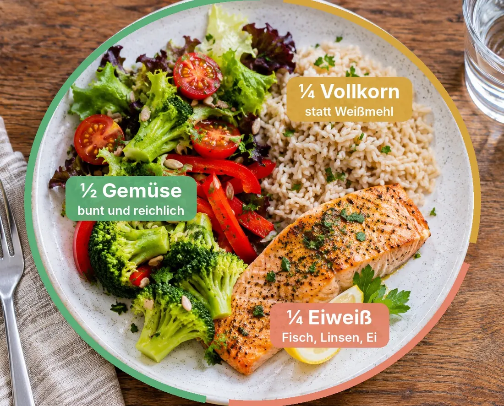
½ Gemüse und Salat
Bunt, gern zuerst essen. Frisch, aus dem Ofen oder tiefgekühlt: alles zählt.
¼ Eiweiß
Hülsenfrüchte, Fisch, Ei, Geflügel, Tofu, Quark oder Joghurt. Macht lange satt und schützt die Muskeln.
¼ Vollkorn und Sättigendes
Vollkornbrot, Naturreis, Kartoffeln, Hafer oder Linsennudeln, in einer Portion, die zu Ihrem Hunger passt.
Gute Fette
Olivenöl, Rapsöl, Nüsse und Samen. Die mediterrane Küche gilt bei Fettleber als besonders günstig.
Wasser dazu
Wasser, ungesüßter Tee oder Kaffee. Mit Zitrone, Minze oder Gurke wird daraus ein kleines Erlebnis.
Langsam genießen
Das Sättigungsgefühl braucht etwa 20 Minuten. Wer langsamer isst, merkt früher, wann es genug ist.
Auch das zählt: Guter Schlaf (sieben bis acht Stunden) erleichtert gesunde Entscheidungen und verbessert die Insulinwirkung. Lautes Schnarchen mit Atemaussetzern sollten Sie ärztlich abklären lassen. Alkohol belastet die Leber zusätzlich. Bei Fettleber lohnt es sich besonders, so wenig wie möglich zu trinken. Sprechen Sie mit Ihrer Ärztin oder Ihrem Arzt darüber, was für Sie passt.
Genuss bleibt.
Der Zucker geht.
Sie müssen auf nichts verzichten, sondern nur geschickt austauschen.
Jedes Würfelchen steht für etwa 3 g Zucker, also ungefähr ein Stück Würfelzucker.
Zuckerangaben sind gerundete Durchschnittswerte; einzelne Produkte weichen ab. Ein Blick auf die Nährwerttabelle („davon Zucker“) lohnt sich. Getränke mit Süßstoff sind beim Umstieg eine Brücke; auf Dauer ist Wasser die beste Wahl.
Gleich satt.
Ganz anders für den Bauch.
Kalorien zählen muss niemand.
Viel einfacher ist die Frage: Was macht mich richtig satt? So viel brauchen Sie, um genauso satt zu werden wie von 2 Bananen:
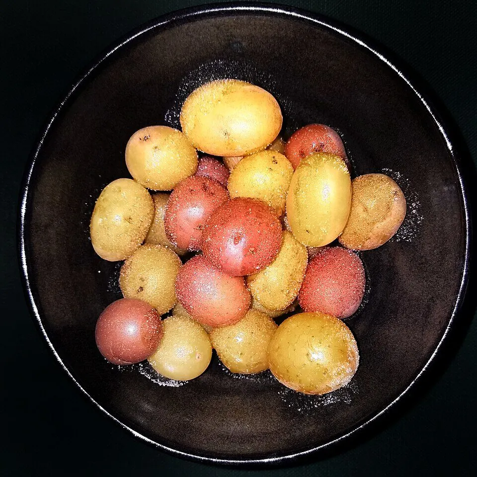
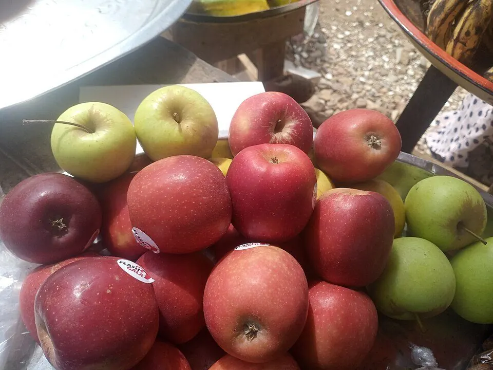
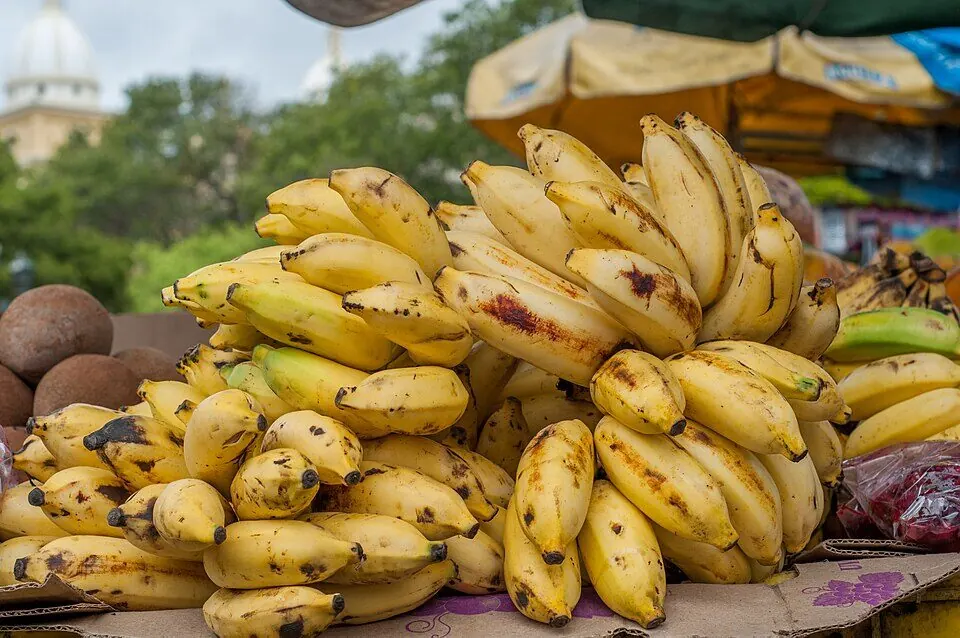
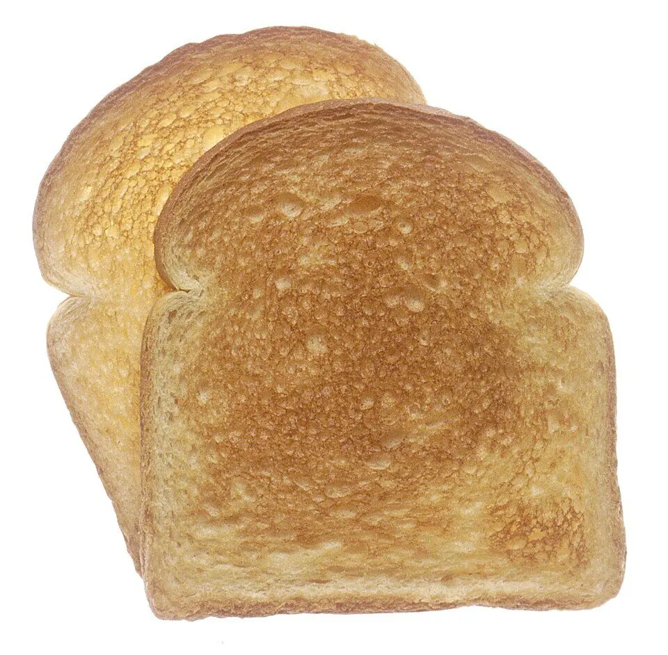
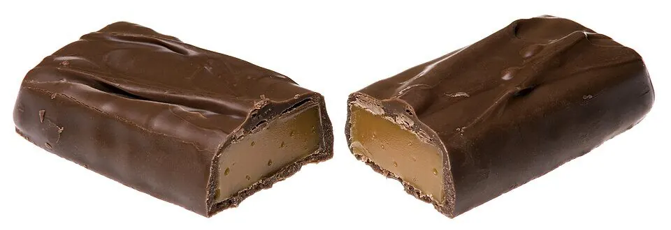
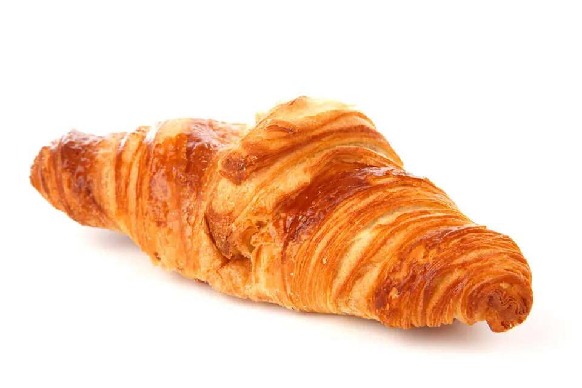
„0,4 × Banane“ heißt: Für dasselbe Sättigungsgefühl nehmen Sie nur 0,4-mal so viele Kalorien auf wie mit Bananen. Grün unter 0,9, Gelb bis 1,2, Rot darüber. Satt ist nicht gleich gesund: Gummibärchen liegen wie die Banane bei 1,0 und Nüsse bei 1,4, obwohl Nüsse beim Gewicht helfen. Dafür gibt es den Bauch-Index. Die Sättigungswerte sind grobe Richtwerte aus einer kleinen Studie, gemessen zwei Stunden nach dem Essen[5]. Getränke wie Cola wurden nicht gemessen: Sie machen kaum satt, ihre Energie kommt praktisch obendrauf.
Satt für den Tag
Die Sättigung zeigt, was Sie heute gut durch den Tag bringt, ohne Hunger und ohne Kalorienzählen.
Schlank über die Jahre
Der Bauch-Index auf Seite 7 zeigt, welche Lebensmittel über Jahre mit weniger oder mehr Bauch zusammenhängen.
Ihr Einkaufszettel
nach Bauch-Index
Hilft deutlich
Hilft
Neutral
Belastet
Belastet stark
Warum Kartoffeln „belasten“?
Gekochte Kartoffeln machen kurzfristig sehr satt, hingen aber über die Jahre leicht mit Zunahme zusammen, Pommes und Chips deutlich. Als kleine Beilage mit viel Gemüse sind Pellkartoffeln völlig in Ordnung.
Warum Öl „neutral“?
Öl hat viele Kalorien. In der großen spanischen PREDIMED-Studie nahmen Menschen mit mediterraner Küche und reichlich Olivenöl oder Nüssen trotzdem nicht zu, ihr Bauchumfang wuchs sogar etwas weniger.[9]
Grundlage: M Langzeitstudien zu einzelnen Lebensmitteln [6] · B Obst und Gemüse, über 130.000 Personen [7] · S eiweißreiche Lebensmittel, über 120.000 Personen [8] · P PREDIMED-Studie [9] · K Studien zu Hülsenfrüchten [10]. Ohne Buchstabe: Einordnung nach Ernährungsleitlinien.
So schmeckt
gesund.
Drei einfache Gerichte für einen ganzen Tag, alltagstauglich, sättigend und ohne Spezialzutaten. Mengen für eine Person.
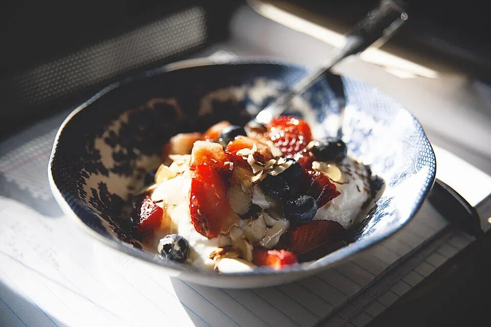
Skyr-Bowl mit Beeren und Walnüssen
Skyr in eine Schale geben, Haferflocken und Beeren darauf verteilen, mit gehackten Walnüssen und etwas Zimt bestreuen.
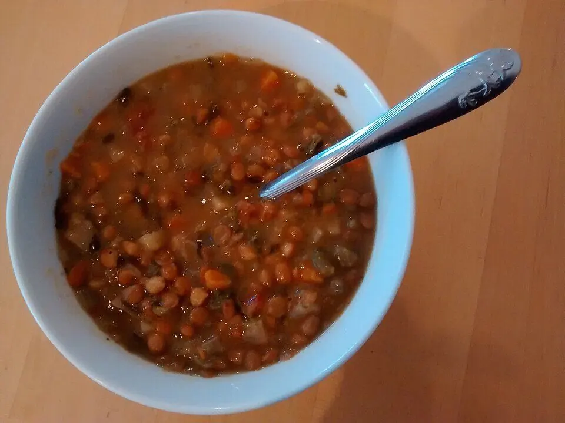
Rote-Linsen-Gemüse-Pfanne mit Feta
Zwiebel und Gemüse in Olivenöl anbraten, gespülte Linsen und Tomaten zugeben, 12 Minuten köcheln lassen. Mit Kreuzkümmel, Zitrone und Feta abschmecken.
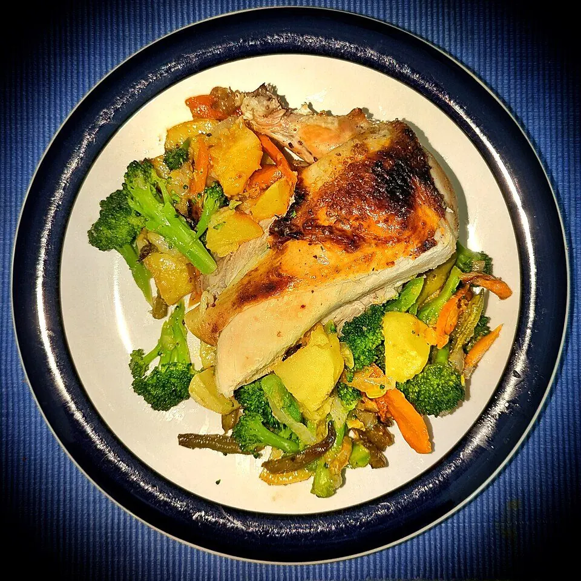
Ofengemüse mit Kichererbsen und Joghurt-Dip
Gemüse und Kichererbsen mit Öl und Paprikapulver mischen, bei 200 °C etwa 25 Minuten backen. Joghurt mit Knoblauch, Kräutern und Salz verrühren.
Kleine Snacks, wenn der Hunger kommt
Ein Apfel mit einem Teelöffel Mandelmus · Gemüsesticks mit Hummus · eine kleine Handvoll Nüsse · ein Naturjoghurt.
Die Reihenfolge macht's
Erst Gemüse und Eiweiß, dann Brot, Reis oder Kartoffeln: So steigt der Blutzucker nach dem Essen sanfter an.
Einmal kochen, zweimal essen
Linsenpfanne und Ofengemüse schmecken auch am nächsten Tag, ideal für die Mittagspause.
Jeder Schritt
ist Medizin.
Sie müssen keinen Marathon laufen.
Gerade wer wenig geht, profitiert von jedem zusätzlichen Schritt am meisten. Muskeln sind der größte Zuckerspeicher des Körpers: Wenn sie arbeiten, holen sie sich den Zucker aus dem Blut.
Was 7.000 statt 2.000 Schritte am Tag ausmachen
Geringeres Risiko in Beobachtungsstudien mit über 160.000 Erwachsenen[11]. Zusammenhänge, keine Garantie für den Einzelnen.
Orientierung nach Alter
Ab hier flacht der Nutzen ab[12]. Starten Sie dort, wo Sie stehen, und legen Sie Woche für Woche etwa 1.000 Schritte drauf.
Wichtig: Wer Insulin oder bestimmte Tabletten (z. B. Sulfonylharnstoffe) nimmt, kann bei mehr Bewegung unterzuckern. Bitte vorher mit der Praxis besprechen, ebenso bei Herzbeschwerden oder Atemnot.
Vier Tricks mit großer Wirkung
- 10 Minuten nach dem Essen gehen: dämpft den Blutzuckeranstieg spürbar.
- 2-mal pro Woche Muskeln stärken: Kniebeugen am Stuhl, Wandliegestütz, Treppen.
- 150 Minuten pro Woche zügig gehen, Rad fahren, tanzen oder schwimmen.
- Langes Sitzen alle 30 Minuten kurz unterbrechen: aufstehen, strecken, ein paar Schritte.
Vier Wochen.
Vier neue Gewohnheiten.
Pro Woche kommt ein Baustein dazu.
Haken Sie jeden Tag ab, an dem es geklappt hat. Fünf von sieben Häkchen sind ein großartiges Ergebnis.
Durst clever löschen
- Süße Getränke durch Wasser, Tee oder Sprudel ersetzen
- Nach einer Mahlzeit 10 Minuten gehen
Mehr Farbe auf den Teller
- Gemüse zu zwei Mahlzeiten am Tag
- Täglich etwa 1.000 Schritte mehr als in Woche 1
Satt in den Tag
- Frühstück mit Eiweiß: Ei, Skyr, Quark oder Hafer mit Nüssen
- Weißbrot gegen Vollkorn tauschen
- Zweimal 15 Minuten Kraftübungen
Gewohnheiten festigen
- Abendessen etwas früher und leichter
- Drei Lieblingsrezepte festhalten
- Bauchumfang messen und Erfolg feiern
Rückschlag?
Gehört dazu.
Geburtstag, Stress, ein verregneter Tag: Das ist normal. Entscheidend ist nicht der einzelne Tag, sondern die Richtung. Morgen geht es einfach weiter.
Mein persönliches Ziel
Am besten konkret: „Ich gehe montags, mittwochs und freitags nach dem Mittagessen eine Runde um den Block.“
Ihre Werte.
Ihre Erfolge.
Zahlen sind kein Zeugnis, sondern ein Kompass.
Messen Sie in Ruhe, immer unter ähnlichen Bedingungen, und schauen Sie auf den Verlauf über Wochen.
HbA1c, der Langzeitzucker
Zeigt den durchschnittlichen Blutzucker der letzten etwa acht bis zwölf Wochen.
unauffällig
Vorstufe
Diabetes
Mit Diabetes vereinbaren Sie Ihren Zielbereich gemeinsam mit Ihrer Praxis, häufig zwischen 6,5 und 7,5 %, je nach Alter, Begleiterkrankungen und Unterzuckerungsrisiko.[13]
Bauchumfang
Messen Sie morgens im Stehen, nach dem Ausatmen, auf halber Höhe zwischen unterster Rippe und Beckenknochen.[25]
die halbe Körpergröße
1,65 m groß → unter 83 cm
gut
erhöht
hoch
So rechnen Sie: Bauchumfang geteilt durch Körpergröße, beides in cm. Beispiel: 98 cm ÷ 178 cm = 0,55, also erhöht. Gilt für Frauen und Männer gleich.
Und die Leber?
Eine Fettleber tut nicht weh. Ultraschall, Leberwerte im Blut und der sogenannte FIB-4-Wert zeigen, wie es ihr geht. Fragen Sie in Ihrer Praxis nach diesen Untersuchungen, besonders wenn Sie Typ-2-Diabetes haben.
Mein Verlauf
| Datum | Gewicht | Bauchumfang | HbA1c | Schritte (Ø/Tag) | So geht es mir |
|---|---|---|---|---|---|
Was jeder Zentimeter
wert ist
Bauchumfang und HbA1c zusammen sagen viel darüber, welche Krankheitskosten und wie viel Lebenszeit auf dem Spiel stehen.
Die gute Nachricht: Jedes Feld nach links oder unten ist ein Gewinn.
Je Feld: Mehrkosten über das restliche Leben gegenüber gesunden Werten (Behandlung, Krankheitstage, Frührente, fehlende Arbeitsjahre) und darunter die Lebensjahre, die im Schnitt verloren gehen. Beispiel: 50 Jahre, Nichtraucher, ausreichend Bewegung, heutige Euro. Für Frauen liegen die Werte fast gleich hoch.
So viel bringt ein Schritt in Richtung Grün
Ihre persönlichen Zahlen
Alle Felder sind Schätzungen aus großen Bevölkerungsstudien, für Einzelne etwa 40 % niedriger bis 45 % höher. Dass in verlorenen Lebensjahren keine Kosten mehr anfallen, ist nicht abgezogen[14]. Mit Ihrem Alter, Ihrer Größe und Ihren Werten rechnet der Gesundheitsrechner hinter diesem QR-Code. Dort stehen auch alle Studien.
Nehmen Sie jemanden mit.
Glück wächst, wenn man es teilt.
Wer sich um andere kümmert, tut auch sich selbst gut.
Und wer nicht allein losgeht, bleibt viel leichter dran.
So viele hielten ihr neues Gewicht noch ein halbes Jahr nach dem Kurs. Wer mit Freunden kam, blieb auch fast immer bis zum Ende dabei (95 statt 76 %).
166 Teilnehmende [20]So stark sank der Langzeitzucker im Mittel, wenn Menschen mit Typ-2-Diabetes von anderen Betroffenen begleitet wurden.
13 Studien, 2.352 Menschen [21]Ältere Menschen, die sich ehrenamtlich engagieren, leben länger, auch wenn man Gesundheit und Einkommen berücksichtigt.
Zusammenhang aus Langzeitstudien [22]Ich nehme mit:
Zwei Namen genügen für den Anfang.
Auf der nächsten Seite wird daraus Ihre Gesundheitskette.
Teilen Sie diese Broschüre
Schicken Sie den Link an jemanden, dem Sie Gutes wünschen.
Dort gibt es diese Broschüre und den Gesundheitsrechner, beides kostenfrei.
tomas-hecker.github.io/mut-zur-zukunft/gesundheitsrechner
Rufen Sie heute eine Person an und verabreden Sie sich für diese Woche zu einem Spaziergang.
Ihr Warum von Seite 2 ist ein guter Grund dafür.
Einer fängt an.
Alle gewinnen.
Gesunde Gewohnheiten stecken an, genau wie Lachen.
Wenn jede und jeder zwei Menschen mitnimmt, wird aus einem kleinen Anfang eine Bewegung.
Hört ein Freund mit dem Rauchen auf, sinkt die eigene Chance zu rauchen um 36 %, beim Ehepartner sogar um 67 %. Gesundes Verhalten wandert durch Freundeskreise.
12.067 Menschen über 32 Jahre [23]Gemeinsames Gehen senkte in 42 Studien Blutdruck, Gewicht und Niedergeschlagenheit. Und drei von vier Teilnehmenden blieben dabei.
1.843 Teilnehmende [24]Vier Formen für Ihre Kette
Quellen
und Bildnachweis
- EASL-EASD-EASO Clinical Practice Guidelines on the management of metabolic dysfunction-associated steatotic liver disease (MASLD). J Hepatol 2024; 81:492–542.
- Vilar-Gomez E u. a. Weight loss through lifestyle modification significantly reduces features of nonalcoholic steatohepatitis. Gastroenterology 2015; 149:367–378.
- Lean MEJ u. a. Primary care-led weight management for remission of type 2 diabetes (DiRECT). Lancet 2018; 391:541–551.
- Stratton IM u. a. Association of glycaemia with macrovascular and microvascular complications of type 2 diabetes (UKPDS 35). BMJ 2000; 321:405–412.
- Holt SH u. a. A satiety index of common foods. Eur J Clin Nutr 1995; 49:675–690.
- Mozaffarian D u. a. Changes in diet and lifestyle and long-term weight gain in women and men. N Engl J Med 2011; 364:2392–2404.
- Bertoia ML u. a. Changes in intake of fruits and vegetables and weight change in United States men and women. PLoS Med 2015; 12:e1001878.
- Smith JD u. a. Changes in intake of protein foods, carbohydrate amount and quality, and long-term weight change. Am J Clin Nutr 2015; 101:1216–1224.
- Estruch R u. a. Effect of a high-fat Mediterranean diet on bodyweight and waist circumference (PREDIMED). Lancet Diabetes Endocrinol 2016; 4:666–676.
- Kim SJ u. a. Effects of dietary pulse consumption on body weight: a systematic review and meta-analysis. Am J Clin Nutr 2016; 103:1213–1223.
- Ding D u. a. Daily steps and health outcomes in adults: a systematic review and dose-response meta-analysis. Lancet Public Health 2025.
- Paluch AE u. a. Daily steps and all-cause mortality: a meta-analysis of 15 international cohorts. Lancet Public Health 2022; 7:e219–e228.
- Nationale VersorgungsLeitlinie Typ-2-Diabetes, Version 3.0, 2023.
- Gesundheitsrechner „Mut zur Zukunft“, Rechenmodell und Studien: tomas-hecker.github.io/mut-zur-zukunft/gesundheitsrechner (u. a. Jayedi u. a. BMJ 2020; Ashwell u. a. 2014; Ulrich u. a. BMJ Open 2016).
- Chida Y, Steptoe A. Positive psychological well-being and mortality: a quantitative review of prospective observational studies. Psychosom Med 2008; 70:741–756.
- Stenholm S u. a. Body mass index as a predictor of healthy and disease-free life expectancy between ages 50 and 75. Int J Obes 2017; 41:769–775.
- Singh B u. a. Effectiveness of physical activity interventions for improving depression, anxiety and distress: an overview of systematic reviews. Br J Sports Med 2023; 57:1203–1209.
- Mujcic R, Oswald AJ. Evolution of well-being and happiness after increases in consumption of fruit and vegetables. Am J Public Health 2016; 106:1504–1510.
- Seligman MEP u. a. Positive psychology progress: empirical validation of interventions. Am Psychol 2005; 60:410–421.
- Wing RR, Jeffery RW. Benefits of recruiting participants with friends and increasing social support for weight loss and maintenance. J Consult Clin Psychol 1999; 67:132–138.
- Qi L u. a. Effectiveness of peer support for improving glycaemic control in patients with type 2 diabetes: a meta-analysis of randomized controlled trials. BMC Public Health 2015; 15:471.
- Okun MA, Yeung EW, Brown S. Volunteering by older adults and risk of mortality: a meta-analysis. Psychol Aging 2013; 28:564–577.
- Christakis NA, Fowler JH. The collective dynamics of smoking in a large social network. N Engl J Med 2008; 358:2249–2258.
- Hanson S, Jones A. Is there evidence that walking groups have health benefits? A systematic review and meta-analysis. Br J Sports Med 2015; 49:710–715.
- NICE (National Institute for Health and Care Excellence). Empfehlung zum Taille-zu-Größe-Verhältnis, Leitlinie zu Übergewicht, Aktualisierung 2022.
Bildnachweis
- Titelbild: KI-Bild (ChatGPT), Tomas Hecker, keine realen Personen
- Teller (S. 8): KI-Bild (ChatGPT), Tomas Hecker
- Radtour (S. 2): KI-Bild (ChatGPT), Tomas Hecker, keine realen Personen
- Croissant: Petr Kratochvil, CC0, Wikimedia Commons
- Schokoriegel: Evan-Amos, CC0, Wikimedia Commons
- Toast: unbekannt, Public domain, Wikimedia Commons
- Linsen: Rainer Zenz at German Wikipedia, Public domain, Wikimedia Commons
- Äpfel: Eunice Ameh, CC0, Wikimedia Commons
- Haferbrei: Renee Comet (Photographer), Public domain, Wikimedia Commons
- Frühstück (Rezept): Peter Hershey peterhershey, CC0, Wikimedia Commons
- Mittagessen (Rezept): Mx. Granger, CC0, Wikimedia Commons
- Abendessen (Rezept): Daderot, CC0, Wikimedia Commons
- Pellkartoffeln: Daderot, CC0, Wikimedia Commons
- Bananen: Wilfredor, CC0, Wikimedia Commons
- Wandergruppe im Herbstwald (S. 17): KI-Bild (ChatGPT), Tomas Hecker, keine realen Personen
Rezeptfotos zeigen ähnliche Gerichte, nicht genau das Rezept. Alle Studien mit Erklärung und Link finden Sie auch im Gesundheitsrechner.
Unterstützung,
die Ihnen zusteht.
Präventionskurse
Zertifizierte Kurse zu Ernährung, Bewegung und Entspannung bezuschussen die gesetzlichen Krankenkassen meist zu einem großen Teil.
Bonusprogramme
Viele Kassen belohnen Vorsorge, Kurse oder Bewegungs-Challenges mit Prämien. Fragen Sie nach den Bedingungen.
DMP Diabetes Typ 2
Das strukturierte Behandlungsprogramm bietet regelmäßige Kontrollen und Schulungen. Sprechen Sie Ihre Hausarztpraxis an.
Ernährungsberatung
Mit ärztlicher Bescheinigung beteiligen sich viele Krankenkassen an den Kosten einer qualifizierten Beratung.
Fragen für Ihr nächstes Arztgespräch
- Welcher HbA1c-Zielbereich passt zu mir?
- Wie geht es meiner Leber (Ultraschall, FIB‑4)?
- Muss ich Medikamente anpassen, wenn ich mich mehr bewege oder weniger esse?
- Welche Schulung oder welcher Kurs passt zu mir?
Nur anfangen.
Suchen Sie sich heute einen einzigen Baustein aus dieser Broschüre aus.
Der Rest kommt Schritt für Schritt.
Es macht mich glücklich, das für Sie tun zu dürfen.
Tomas Hecker
tomas-hecker.github.io/mut-zur-zukunft/gesundheitsrechner
Alle Quellen und Bildnachweise: Verzeichnis auf Seite 19.
Diese Broschüre informiert und motiviert; sie ersetzt keine ärztliche Beratung. Ändern Sie Medikamente nie ohne Rücksprache. Stand: November 2026.